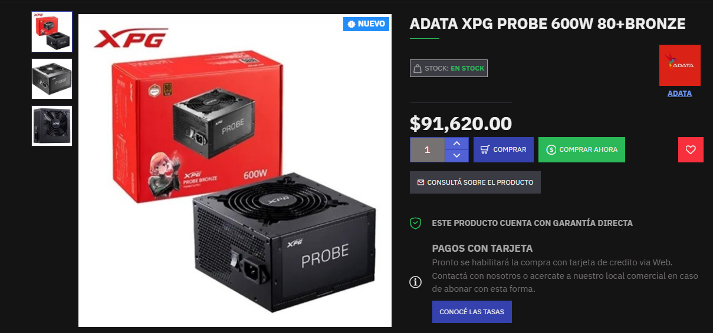
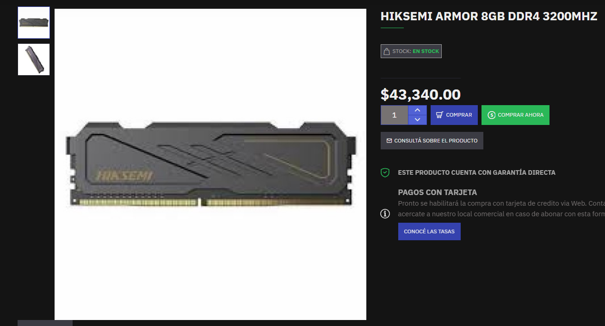
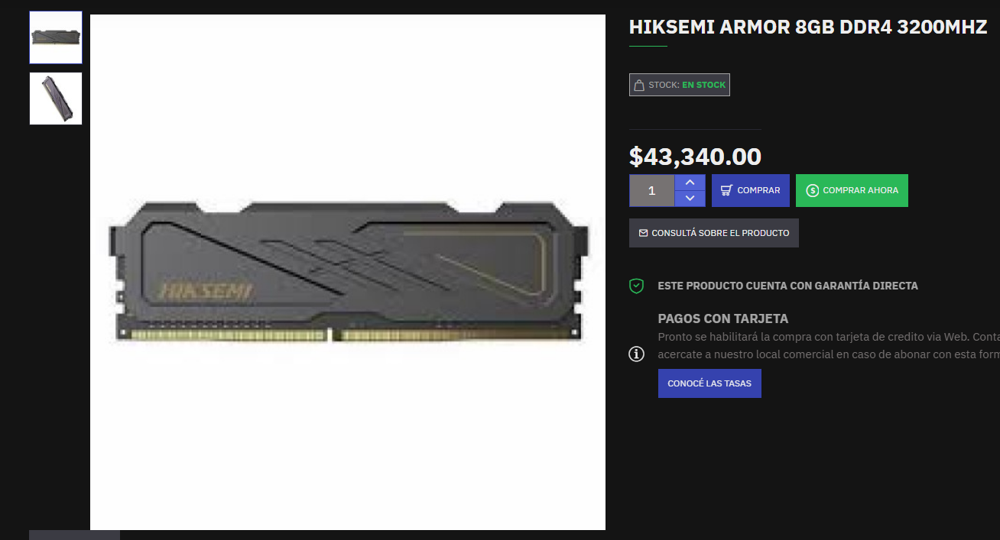
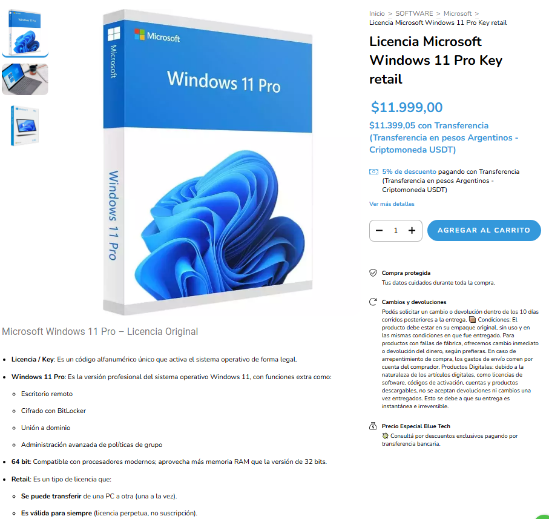
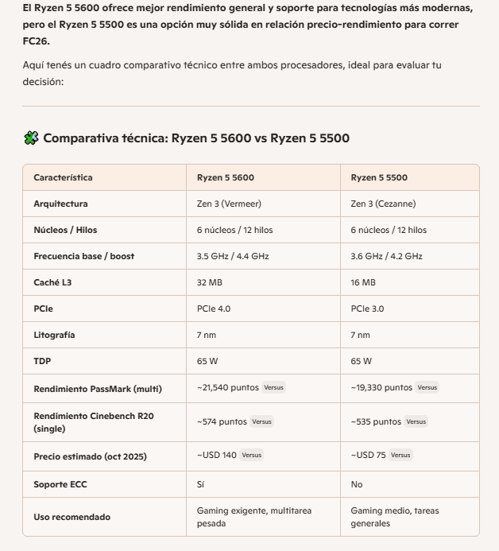
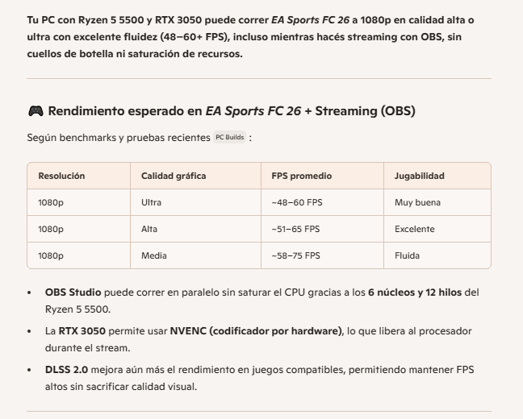

Carátula del Trabajo.
• Universidad: Universidad Autónoma de Entre Ríos
• Facultad: Facultad de Ciencias y Tecnologías
• Carrera: Licenciatura en Sistemas de Información
• Cátedra: Fundamentos de Computación
• Trabajo Práctico: Trabajo Práctico N°1 “Streaming de videojuegos”
• Profesores: Bioing. Ismael Cassi ; Lic. Paolo Orundés Cardinali
• Integrantes del Grupo: Brunelli Julián; Gutierrez Santos; Valenti Jerónimo.
• Comisión: 4
• Fecha de Entrega: 31 de Octubre
• Año Lectivo: 2025
JUEGO ELEGIDO: EA Sports FC 26
El FC 26 es un simulador de fùtbol muy popular a nivel mundial, con millones de usuarios. Es la continuación de la saga "FIFA", siendo esta la entrega mas reciente ya que sale a la venta recién este viernes 26 de septiembre.
Su género es "Simulador deportivo", puede jugarse en varias plataformas (pc, PlayStation, Xbox, Nintendo), y tiene varios modos de juego, ya sea individual o multijugador grupal, lo que permite jugar partidos contra la ia o entre amigos, o multijugador global, que permite jugar partidos contra personas de todo el mundo.
También cuenta con un modo carrera, en el que puedes tener la carrera de un director técnico o jugador, y el modo Ultimate team, que es un modo competitivo online en donde armas tu equipo y compites contra otras personas.
REQUERIMIENTOS MÍNIMOS y RECOMENDADOS:

Requerimientos mínimos y recomendados según Steam


Requerimiento mínimo según IA Copilot Requerimiento recomendado segun IA Copilot

Requerimientos mínimos y recomendados según ChatGPT
Para correr EA Sports FC 26 en la pc, se debe contar con un sistema operativo moderno de 64 bits, como Windows 10 u 11, actualizado a su última versión. En cuanto al procesador, se recomienda uno de gama media con múltiples núcleos, capaz de manejar tareas simultáneas como el juego y otras aplicaciones en segundo plano. Para los requisitos mínimos, alcanza con un procesador básico de cuatro núcleos, mientras que para un rendimiento óptimo en 1080p, lo ideal es uno de seis u ocho núcleos con buen rendimiento por hilo.
Respecto a la memoria RAM, el juego requiere al menos 8 GB para funcionar correctamente, aunque se recomienda tener 12 GB o más para evitar saturaciones, especialmente si pensás transmitir o grabar mientras jugás. En cuanto a la tarjeta gráfica, se necesita una placa dedicada con al menos 4 GB de memoria de video para jugar en calidad baja o media, mientras que para calidad alta o ultra en Full HD, lo ideal es una GPU de gama media con 6 GB o más de VRAM.
También es importante contar con al menos 100 GB de espacio libre en disco, preferentemente en una unidad de estado sólido (SSD), para asegurar tiempos de carga rápidos y fluidez general. Finalmente, una conexión a internet estable es esencial para los modos en línea y para mantener el juego actualizado.
NECESIDADES ADICIONALES PARA TRANSMISION:
Internet: Es fundamental tener una velocidad de subida mínima de 6 Mbps para transmitir en 1080p a 60 FPS. Si querés mayor calidad o transmitir en 2K, lo ideal sería tener 10 Mbps o más. Además, usá conexión por cable en lugar de Wi-Fi para evitar cortes o fluctuaciones.

Software de transmisión: El más recomendado es OBS Studio, gratuito y compatible con Windows. Permite usar codificación por hardware (NVENC si tenés GPU NVIDIA), lo que libera al procesador y mejora el rendimiento.
Configuración del stream: La resolución a 1920x1080 con una tasa de cuadros de 60 FPS, y activar el modo de prioridad alta en el proceso de OBS para evitar caídas de rendimiento.

OTRAS ESPECIFICACIONES:
Nosotros optamos por usar, en general, un porcesador amd, ya que es mejor a la hora de realizar multiples tareas, como por ejemplo gaiming y streaming. Ademas tiene mayor compatibilidad con placas madres y otros componenetes que permiten que sea mas flexible a la hora de armar la pc y actualizarla.
ESPECIFICACIONES TECNICAS

Estos son algunos de los terminos que necesitamos aprender a la hora de armar nuestra pc.
¿Qué es la CPU?: es algo asi como el cerebro de la computadora, es la unidad que interpreta y ejecuta las tareas que debe realizar la PC. En pocas palabras coordina tareas y toma desiciones lógicas.
Tiene varios componentes claves, tales como núcleos, hilos, cache o frecuencia.
¿Qué es la GPU?: se encarga de mostrar todo lo que se ve en pantalla, osea recibe los datos de lo que quiere mostrar, los procesa y dibuja en pantalla.
Hay dos tipos de GPU, puede ser integrada o dedicada.


Para las tareas que buscamos realizar nosotros, osea gaming y streaming, claramente una gpu dedicada es mejor, ya que mejora considerablemente la calidad de imágen.
¿Qué es el BITRATE EN STREAMING?: es -muy resumidamente- la calidad de video que uno ve en streams o videos.


¿Qué es la LATENCIA?: es el tiempo que demora en ir y volver la información que nosotros le damos al sistema (por ej: presionar una tecla)


¿Qué son los HILOS?: son algo asi como las manos de los nucleos, es decir que cuantos mas hilos tenga el nucleo mas tareas puede realizar.
¿Qué son los NÚCLEOS?: son como los trabajadores que se dividen las tareas. Cuanto más núcleos son, puedes realizar más tareas en simultáneo debido a que cada núcleo se encarga de una.

¿Qué es el CACHÉ?: es un bloque de datos que contiene información que se utiliza a menudo, ubicada al lado del CPU, para que esta información llegue más rápido.
¿Qué es la FRECUENCIA?: es la cantidad de tareas por segundo que puede realizar el núcleo. 1 GHz equivale a 1.000.000.000 de cosas por segundo. Conviene tener varios núcleos con menos GHz a tener un núcleo con muchos GHz.


La frecuencia del procesador puede generar cuellos de botella, pero no está sola en eso.
Un cuello de botella se produce cuando una parte de la compu es más lenta que las demás, y eso hace que todo el sistema se frene.
Si tenés un procesador con frecuencia baja (por ejemplo, 1.5 GHz) y una placa de video súper rápida, la CPU no puede darle datos lo suficientemente rápido a la GPU, entonces la GPU se queda esperando… y eso es un cuello de botella.
IMAGENES DEL JUEGO:

OTROS JUEGOS EVALUADOS:
1) MINECRAFT:
Es un juego de construcción y aventura en un mundo abierto, donde los jugadores pueden explorar, recolectar recursos, construir estructuras y sobrevivir a criaturas. Tiene varios modos de juego, incluyendo supervivencia, creativo y multijugador. Es muy popular entre todas las edades debido a su jugabilidad sencilla pero profunda.

En resumen, son dos juegos completamente distintos, mientras que uno es un simulador de futbol, es otro es de supervivencia y construcción. El streaming de Minecraft es muy popular también, y bastante antiguo ya, además su público es muy amplio.
En cuanto a rendimiento, Minecraft utiliza muchísimos menos recursos que el Fc 26, por lo que no es necesario tener una pc demasiado potente para correrlo.
2) ROCKET LEAGUE:
Es un juego de deportes y acción que combina fútbol con vehículos propulsados por cohetes. Los jugadores controlan autos para golpear una pelota gigante y marcar goles en el campo del equipo contrario. Tiene modos de juego tanto individuales como multijugador, y es conocido por su jugabilidad rápida y competitiva.


El videojuego EA Sport FC26 busca ofrecer una una experiencia mas realista en el enfoque táctico, simulación y profesional, mientras que Rocket League propone un estilo arcade rápido y accesible , donde vehículos compiten en alto rendimiento, este juego destaca mas por su dinamismo. Ambos juegos destacan en el mundo del stream y del esport
En cuanto a rendimiento el FC26 exige mas recursos: una CPU mas moderna, mas RAM y mas espacio en el diso duro, mientras que el rocket es mas liviano, es mas accesibles para PCs de gama media o baja, y ambos necesitan conexión estbale para su jugabilidad online, aunque el FC26 se mas exigente.
Título de la imágen: "Objetivo de vida"
Explicación: para realizar esta imágen usamos chat gpt, y el mensaje que quisimos transmitir es como seria una vida sin preocupaciones ni problemas.
***********************************************************************************************************************************************************************************************************
PARTE DE JERONIMO:
En primer lugar elegi que la IA copilot me recomendara que elementos utilizar:


Tambien le pedi a la IA chat gpt que me recomiende componentes:

Luego de ver las recomendaciones esta es la pc que decidi armar:

Los presupuestos los saque de las siguientes paguinas https://insumaxcenter.com.ar/gamer es una paguina de la ciudad de parana, https://fullh4rd.com.ar/ es una tienda de argentina y https://bluetech.com.ar/productos/windows11/.
CPU:
TARJETA GRAFICA:

ALMACENAMIENTO:
PLACA BASE:

FUENTE DE PODER:
GABINETE:
REFRIGERACION:
WEBCAM:
MONITOR:
.jpeg)
TECLADO Y MOUSE:

AURICULARES:

JOYSTIC PS4:
El presupuesto total de todo es de $1.510.183 pesos, que en el dia de hoy equivalen a 1000,21 dolares
¿Porque elegi estos componentes?
En el procesador elegi utilizar un ryzen 5600, ya que este tiene un buen rendimiento en los videojuegos y tiene la capacidad para realizar las tareas en simultaneo de manera rápida y equilibrada (discord, OBS) sin saturarse, existen mejores como el ryzen 7 pero este se desempeña muy bien en su trabajo. Para el procesador grafico elegi el RTX 3050 con 8 GB de VRAM esto me va a permitir stremear y jugar a 1080p, tiene acceso a tecnologías como DLSS que permiten sumar calidad visual sin perdidas de FPS. La RAM de 16GB DDR4 es buena para el uso del gaiming y del streaming, permite mantener el sistema ágil aun asi teniendo varias aplicaciones abiertas (discors, obs, etc) Para el almacenamiento elegi ponerle el SSD NVMe Gen4 de SanDisk, contiene una buena velocidad con 500MB/s de lectura, ayuda muchísimo en la reducción de los tiempos de carga, esto se nota en los juegos en el sistema operativo. La placa base es la B550 además de ser compatible con todos los elementos que elegi, me permitiría poder cambiar el procesador por uno mejor a futuro o agregar mas espacio. La fuente 650W me garantiza una buena eficiencia energética y protección contra picos de tensión, es unos de los puntos mas débiles, capaz mas a futuro se podría cambiar por uno mejor. Para el gabinete me decidí por el Eagle Warrior con 4 ventiladores ARGB logra una mejoría en el flujo de aire, va en sintonía con el watercooler que elegi de 360mm, esto va a poder permitir mantener la CPU en temperaturas optimas, la refrigeración liquida ayuda a la reducción del ruido, ideal para las lasrgas horas de streming. El monitor ViewSonic VX2428A con 180Hz da una buena respuesta en juegos de deporte, esto ayuda a mejorar la experiencia del juego. La webcam Logitech C920 es una cámara muy utilizada por los stremers. Brinda una buena calidad de imagen, tiene enfoque automatico, ayuda mucho a mantener una imagen clara y profesional. El teclado y mouse Thermaltake eSPORTS y los auriculares Aureox GH200 cumplen sus función, son cómodos y te permiten jugar y gracias al microfono de los Aureox permiten comunicarte sin problemas. El joystick garantiza una mejor experiencia para el juego FC26, donde el control es más cómodo y fácil de jugar que el teclado.
**************************************************************************************************************************************************************************************************************
Parte de Julián
-----------------------------------------------
Para comenzar, al no tener mucha idea de componentes, le pedí ayuda a varias Inteligencias Artificiales para que me ayuden en el armado:
Según la IA ChatGPT, estos son los componentes y periféricos ideales para la PC que se busca:


Según la IA Copilot, estos son los componentes necesarios para el armado de la PC:


Toda la información obtenida a continuación es del día 22 de Septiembre:
1000 USD = 1.410.250 ARS (según https://www.exchange-rates.org/es/conversor/usd-ars/1000)
Ahora con esta información, y con los precios obtenidos de las páginas (links abajo del todo), esta fue la PC que armé:
HARDWARE:
PC Componentes:
CPU: AMD Ryzen 5 5500 = $127.889,91
GPU: VIDEO GeForce RTX 3050 8GB MSI VENTUS 2X XS OC = $399.839,87
RAM: Lexar SODIMM DDR4 16GB 3200Mhz = $68,330.00
SSD: HD SSD 1TB LEXAR NM610PRO M.2 NVME GEN3 3300MB/S 2280 = $94.749,37
Placa Madre: Asus Prime B550M-K = $129.338,78
Fuente: Sentey MBP 700W 80+ Bronze = $99,010.00
Gabinete: SENTEY H10 BLACK VIDRO LATERAL Y FRONTAL = $35.437,40
PC periféricos:
Monitor: 25" NOBLEX SM2500 VA FHD ANTIRREFLEJO 100HZ HDMI VGA +q 24 = $207.344,85
Auriculares: QBOX H039 USB JACK 3.5 Y 3 PINES GAMER CALL CENTER CELULAR H390 H110 = $11.759,89
Teclado, mouse y mousepad: COMBO TECLADO+MOUSE+MOUSEPAD AUREOX LIFELIGHT GAMING GC1000 = $34.637,75
Micrófono: TRUST MANTIS GXT232 = $41.406,08
Cámara: WEBCAM LOGITECH C920S HD PRO 960-001257 = $138.155,45
SOFTWARE:
Sistema Operativo: Windows 11 = $11.999,00
Herramientas para stream: OBS Studio + Streamlabs + NVIDIA Broadcast + Discord = Gratis
TOTAL= $1.399.898,35
JUSTIFICACIÓN de cada elemento:
Ryzen 5 5500: 6 núcleos y 12 hilos, ideal para jugar y streamear sin lags.
Excelente relación precio-rendimiento para gaming y streaming. Compatible con placas B450/B550 sin necesidad de gráficos integrados.
RTX 3050 8GB: corre FC 26 en ultra y permite streaming fluido con NVENC.
Ideal para jugar en 1080p con buena calidad gráfica. La versión MSI Ventus XS OC tiene buen sistema de refrigeración y tamaño compacto.
16GB RAM DDR4: suficiente para multitarea (juego + OBS + navegador).
Cantidad y velocidad óptima para gaming y multitarea. Compatible con Ryzen y buena marca.
SSD NVMe 1TB: carga rápida y espacio para juegos y grabaciones.
Excelente velocidad para sistema operativo y juegos. Capacidad suficiente sin necesidad de disco adicional.
ASUS B550M-K: compatible con Ryzen y PCIe 4.0, buena base para futuras mejoras.
Compatible con el Ryzen 5 5500, buena calidad de construcción y opciones de expansión. BIOS actualizable.
Fuente Sentey MBP 700W: Potencia suficiente para GPU dedicada y futuros upgrades. Marca confiable y eficiencia energética.
Gabinete Sentey H10: buena ventilación, estética gamer y espacio para todo.
Monitor Noblex 25” 100Hz: buen tamaño y fluidez visual para gaming competitivo.
Auriculares QBOX + Micrófono Trust: audio claro para streaming y comunicación y buena estética.
Teclado, mouse y mousepad: funcional y estético.
Webcam Logitech C920S: imagen nítida para transmisiones en vivo.
Windows 11: sistema moderno y compatible. Última versión con soporte para DirectStorage y mejoras en rendimiento.
OBS + Streamlabs + NVIDIA Broadcast + Discord: herramientas gratuitas y profesionales para streaming.
Links
https://ecommerce.paranahardware.com.ar
https://bluetech.com.ar/productos/windows11/
https://fullh4rd.com.ar/
COMPARACIONES de componentes que consideré al principio pero luego terminé cambiando:
CPU:
Antes, consideré el Ryzen 5 5600G (con gráficos integrados) pero terminé optando por el Ryzen 5 5500 porque el 5500 tiene mejor rendimiento en tareas multihilo y gaming con GPU dedicada, no necesitabas gráficos integrados porque ya incluías una RTX 3050, y el precio es más bajo que el 5600G, sin sacrificar potencia.
Almacenamiento:
Antes, consideré el Kingston A400 SATA, pero me terminé inclinando por el Lexar NM610 PRO 1TB NVMe debido a que es mucho más rápido (NVMe vs SATA), tiene mayor capacidad (1TB vs 480GB) y es ideal para juegos pesados, grabaciones y sistema operativo.
**************************************************************************************************************************************************************************************************************
Parte de Santos:
Según la inteligencia artificial Copilot, esta fue la PC recomendada:

Y estos son los periféricos recomendados, según esta misma IA:

Según la inteligencia artificial Chat gpt, esta fue la PC recomendada:

Por lo tanto, según mi criterio, esta fue la pc que elegí, de forma que se adapte a mi presupuesto:

El presupuesto lo saque de las siguientes páginas: https://ecommerce.paranahardware.com.ar, https://bluetech.com.ar/productos/windows11/ y https://fullh4rd.com.ar/
Esta pagina corresponde a una casa de computacion de Paraná.
El presupuesto total de la pc es de $1.039.760, o 707,80 dolares a precio del 17/9/2025.
El precio de cada componente es el siguiente:
VIDEO GeForce RTX 3050 8GB MSI VENTUS 2X XS OC: $402.800
AMD Ryzen 5 5500: $161.290
FuenteAdata XPG Probe 600W 80+Bronze: $91.620
CRUCIAL BX500 SSD 500GB: $62.220
Asus Prime B550M-K: $153.880
HIKSEMI ARMOR 8GB DDR4 3200MHz (x2): $43.340 cada una
Gabinete Sentey M40 ARGB: $79.760
A continuación, adjunto los precios sacados de la página:

 


EXPLICACION DE CADA ELECCION:
Placa de video: Elegí la RTX 3050 porque es una placa de gama media que me permite jugar a 1080p con buenos gráficos en la mayoría de los juegos actuales. Además, tiene soporte para tecnologías como Ray Tracing y DLSS, lo que mejora la calidad visual y el rendimiento.
Procesador: El AMD Ryzen 5 5500 permite ejecutar el juego y el software de streaming (como OBS) al mismo tiempo sin saturar el procesador.. Tiene 6 núcleos y 12 hilos, lo que proporciona un buen equilibrio entre rendimiento y precio. Es compatible con la mayoría de las placas madre B550, lo que facilita futuras actualizaciones.
Ram: Buena relación calidad precio, además de que se complementa muy bien con la placa de video y el procesador. Permite jugar sin tirones ni saturación de memoria. También incluye disipador de calor.
Almacenamiento: Este ssd es sufuciente para instalar el sistema operativo, un editor de video, el juego, y guardar los clips de mis streams. Además es de los más baratos del mercado, por lo que pude abaratar costos.
Placa madre: La Asus Prime B550M-K es una placa madre durable y con buena compatibilidad, además de que es bastante accesible. Está diseñada para aprovechar al máximo procesadores como el ryzen 5 5600, e incluye estabilidad, refrigeración y buen rendimiento en general.
Fuente: La Adata XPG Probe 600W 80+Bronze es una fuente de alimentación confiable y eficiente, con certificación 80 Plus Bronze que garantiza un buen rendimiento energético. Con 600W de potencia, es suficiente para alimentar todos los componentes de la PC y permite futuras actualizaciones sin problemas.
Gabinete: El Sentey M40 ARGB es un gabinete económico pero funcional, con buen flujo de aire y espacio suficiente para los componentes elegidos.
PERIFERICOS ELEGIDOS:
Lista de precios:
Monitor Hikvision DS-D5027F2 VGA/HDMI 100Hz: $215.870
Sentey GS-5850 Combo Gaming, incluye mouse, auriculares y teclado: $49.000
WEBCAM LOGITECH C920S HD PRO 960-001257: $138.839
Total periféricos: $402.000
A continuación, adjunto los precios sacados de la página:


Explicación de cada elección:
Monitor: Elegí este monitor porque tiene una buena resolución (1920x1080) y una tasa de refresco de 100Hz, lo que mejora la experiencia de juego y reduce el desenfoque de movimiento. Además, tiene entradas VGA y HDMI, lo que permite conectarlo a diferentes dispositivos.
Combo de teclado, mouse y auriculares: Este combo es una opción muy buena para abaratar costos.
Webcam: La Logitech C920S HD Pro es una webcam de alta calidad que ofrece una resolución Full HD (1080p) y un enfoque automático rápido. Es ideal para transmisiones en vivo ya que proporciona una imagen clara y nítida.
SISTEMA OPERATIVO:
Elegí comprar una licencia Microsoft Windows 11 Pro Key retail, ya que se adaptaba bien a mi presupuesto, además de que me gusta la interfaz y comodidad de este so.
El precio de esta licencia es de $11.999.
En total, el presupuesto de la pc más los periféricos y el sistema operativo es de $1.453.759, o 988,79 dolares a precio del 17/9/2025.
El presupuesto total se adapta a mi presupuesto inicial, que era de 1000 dolares, y permite tener una PC para jugar y strimear el FC26 en buena calidad y con un buen rendimiento.
La opinion de la ia copilot sobre mi pc fue la siguiente:

ALTERNATIVAS DE HARDWARE DESCARTADAS:
Procesador: Había considerado el Ryzen 5 5600 pero su precio me hizo descartarlo. Sin embargo el ryzen 5 5500 sigue siendo una muy buena opción.
Placa de video: Había considerado la AMD Radeon RX 7600, pero opté por la rtx 3050 8gb debido a que tiene menor consumo y genera menos temperatura, se adapta mejor a mi setup, es mas compatible con distintos software e incluye DLSS 2.0, que mejora FPS en juegos compatibles sin perder calidad visual.
Ram: en principio iba a elegir una sola memoria ram, pero terminé eligiendo dos de 8gb debido a que aumentaban el rendimiento de la pc, además que con 16 de ram el fc26 ya tiene un buen rendimiento y no es necesario ampliarlo a 32gb de ram.
Almacenamiento: Había considerado un ssd de 1tb, pero opté por uno de 500gb para abaratar costos. Con 500gb tengo suficiente para instalar el sistema operativo, el juego y guardar los clips de mis streams. En caso de necesitar más almacenamiento en el futuro, puedo agregar un disco duro externo o un segundo ssd.
RENDIMIENTOS ESPERADOS:
Con esta configuración, espero poder jugar al FC26 en calidad alta a 1080p con unos FPS estables, de al menos 60 FPS. Además, la PC debería ser capaz de manejar transmisiones en vivo sin problemas.
Según la ia:
OTRAS ACLARACIONES:
En cuanto a conección wifi, voy a usar el cable conectado directamente desde el router a la pc, que ya tengo en casa, debido a que mi placa madre no puede conectarse directamente a este.
Como microfono para strimear, voy a usar el que ya viene incluido en los auriculares, que aunque la calidad de audio no sea la mejor, me permite no pasarme del presupuesto.